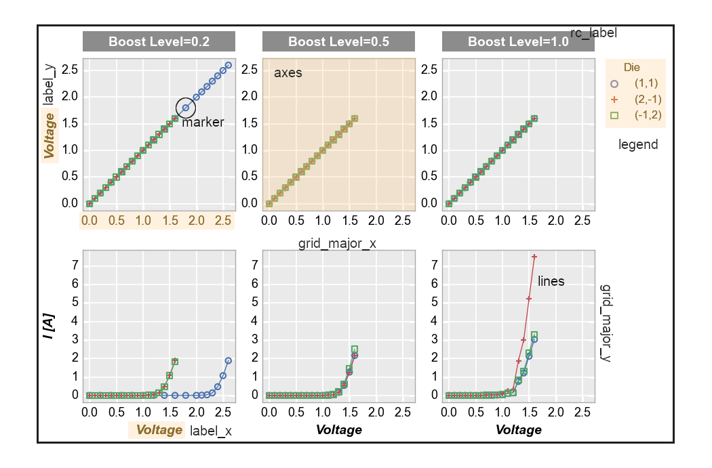

Layout and Elements¶
All plots consist of some number of “elements” that are arranged in a spatial “layout”. Each of these “elements” has various attributes that define its style. Consider the following plot, showing the layout region outlined in black along with several “elements” (circled or highlighted in yellow):
The “layout”:
defines the size of the entire plotting canvas
defines the position of each element within the canvas, which in turn defines the whitespace between elements
is largely determined by “grouping” options (such as row, col, wrap)
is defined by a
Layoutclass in fivecentplots. This “layout” is built upon the backbone of an existing plotting library (aka “engine”) in Python, such as matplotlib or bokeh.
Note
Although each plotting library in Python has a unique API, the Layout class in fivecentplots wraps
the module-specific function calls and commands of the library to provides a new, unified API that is
module-independent. This new, common API uses a keywords-only approach as described in the
next section and means that the same fivecentplots plot command can be used to
create a plot in say matplotlib or in bokeh (assuming the particular plot type has been wrapped).
An “element”:
is a rendered object placed within the layout (such as the axis area, the plot lines, the data markers, a legend box, etc.)
is styled by specific attributes related to that element (i.e., font size, fill color, edge color alpha, etc.)
is defined by an
Elementclass in fivecentplots
Simple Layout Schematic¶
A schematic of a single-axis Layout (i.e., no grouping) is shown below. The Layout will automatically
adjust in size to accomodate the Element objects that have been enabled. The whitespace between Element
objects can also be modified by the user by overriding the appropriate keywords.

Note
All of these size and whitespace parameters have defaults that can be changed at function call time via keyword arguments or globally with a custom theme file. Whitespace keywords are detailed further in the “ws” API section
Grid Layout Schematic¶
With fivecentplots we can easily extend the simple single-axis plot and make a grid of subplots, which enables
additional Layout parameters illustrated below:

Elements¶
The following list outlines the Element objects available. More details about the style and other keyword options
for these “elements” can be found in the API section Usage examples are also provided in the “Plot Types”
section of the docs.
ax_hlines: Element object for horizontal lines
ax_vlines: Element object for vertical lines
ax2_hlines: Element object for horizontal lines on secondary axis
ax2_vlines: Element object for vertical lines on secondary axis
axes: Element object for the axis
axes2: Element object for the secondary axis
bar: Element object for barchart plot
box: Element object for box plot
box_divider: Element object for divider lines between box groups
box_grand_mean: Element object for grand mean line plot on box plot
box_grand_median: Element object for grand median line plot on box plot
box_group_means: Element object for group mean line plots on box plot
box_group_label: Element object for box plot group label text
box_group_title: Element object for box plot group title text
box_mean_diamonds: Element object for mean diamond overlays on box plot
box_range_lines: Element object for box plot range line styling
box_stat_line: Element object for arbitrary stat line plot on box plot
box_whisker: Element object for bow wisker line styling
cbar: Element object for colorbar
contour: Element object for contour plot
fig: Element object for the figure
fit: Element object for fit line
gantt: Element object for gannt chart
grid_major: Element object with default values for major grids not explicitly defined
grid_major_x: Element object for x major grid (defaults to self.grid_major)
grid_major_x2: Element object for x2 major grid (defaults to self.grid_major)
grid_major_y: Element object for y major grid (defaults to self.grid_major)
grid_major_y2: Element object for y2 major grid (defaults to self.grid_major)
grid_minor: same as above but for minor grid
grid_minor_x: same as above but for minor grid
grid_minor_x2: same as above but for minor grid
grid_minor_y: same as above but for minor grid
grid_minor_y2: same as above but for minor grid
heatmap: Element object for heatmap plot
hist: Element object for histogram plot
imshow: Element object for imshow plot
interval: Element object for conf, percentile, nq interval ranges
label_col: Element object for col label text
label_row: Element object for row label text
label_wrap: Element object for wrap label text
label_x: Element object for the x-label
label_x2: Element object for the secondary x-label
label_y: Element object for the y-label
label_y2: Element object for the secondary y-label
label_z: Element object for the z-label
lcl: Element object for lower control limit shading
legend: Legend_Element for figure legend
lines: Element object for plot lines
markers: Element object for markers
pie: Element object for pie chart
ref_line: Element object for reference line
rolling_mean: Element object for the rolling mean XY plot on bar chart
text: Element object for arbitrary text
tick_labels_major: Element object with default values for tick labels not explicitly defined
tick_labels_major_x: Element object for x major tick labels (defaults to self.tick_labels_major)
tick_labels_major_x2: Element object for x2 major tick labels (defaults to self.tick_labels_major)
tick_labels_major_y: Element object for y major tick labels (defaults to self.tick_labels_major)
tick_labels_major_y2: Element object for y2 major tick labels (defaults to self.tick_labels_major)
tick_labels_major_z: Element object for z major tick labels (defaults to self.tick_labels_major)
tick_labels_minor: same as above but for minor tick labels
tick_labels_minor_x: same as above but for minor tick labels
tick_labels_minor_x2: same as above but for minor tick labels
tick_labels_minor_y: same as above but for minor tick labels
tick_labels_minor_y2: same as above but for minor tick labels
ticks_major: Element object with default values for ticks not explicitly defined
ticks_major_x: Element object for x major ticks (defaults to self.ticks_major)
ticks_major_x2: Element object for x2 major ticks (defaults to self.ticks_major)
ticks_major_y: Element object for y major ticks (defaults to self.ticks_major)
ticks_major_y2: Element object for y2 major ticks (defaults to self.ticks_major)
ticks_minor: same as above but for minor ticks
ticks_minor_x: same as above but for minor ticks
ticks_minor_x2: same as above but for minor ticks
ticks_minor_y: same as above but for minor ticks
ticks_minor_y2: same as above but for minor ticks
ticks_minor_x_number: number of x-axis minor ticks
ticks_minor_x2_number: number of x2-axis minor ticks
ticks_minor_y_number: number of y-axis minor ticks
ticks_minor_y2_number: number of y2-axis minor ticks
title: Element object for the plot title
title_wrap: Element object for title text in wrap plot
violin: Element object for box plot violins
ucl: Element object for upper control limit shading
Engine¶
fivecentplots is not a new graphics generation library. In fact, plots are created using existing Python plotting
packages. These “engines” are wrapped by module-specific Layout classes in fivecentplots to provide a new,
simpler API that allows complex plotting via kwargs. All unique and complicated API calls of a given plotting package
are handled behind the scenes. The most mature “engine” supported by fivecentplots is matplotlib which is
enabled by default. Currently, there is limited support for bokeh, but this will grow in the future. Additional
“engines” could easily be supported through the creation of a new Layout class (volunteers welcome!). Using this
approach of API unification through kwargs, fivecentplots enables the user to switch between plotting engines by
changing only one kwarg, engine. Besides this the plot call remains exactly the same.
For example, say you need a high-quality plot for a paper and prefer to use matplotlib, you could do the following:
fcp.plot(df, x='Voltage', y='I [A]', legend='Die',
filter='Substrate=="Si" & Target Wavelength==450 & Boost Level==0.2 & Temperature [C]==25')

Note
Notice that engine is not explicitly called above because matplotlib is assumed by default.
Now suppose you need to interactively manipulate the same data set, thus making a static image less attractive.
You could switch “engines” and plot via bokeh, all with the addition of just one keyword engine='bokeh':
fcp.plot(df, x='Voltage', y='I [A]', legend='Die', engine='bokeh',
filter='Substrate=="Si" & Target Wavelength==450 & Boost Level==0.2 & Temperature [C]==25')
{kind=link}
All with only one kwarg change!
Note
As of version 0.5.0, bokeh support is limited compared with matplotlib. More development is needed. Not all plot types are available at this time.